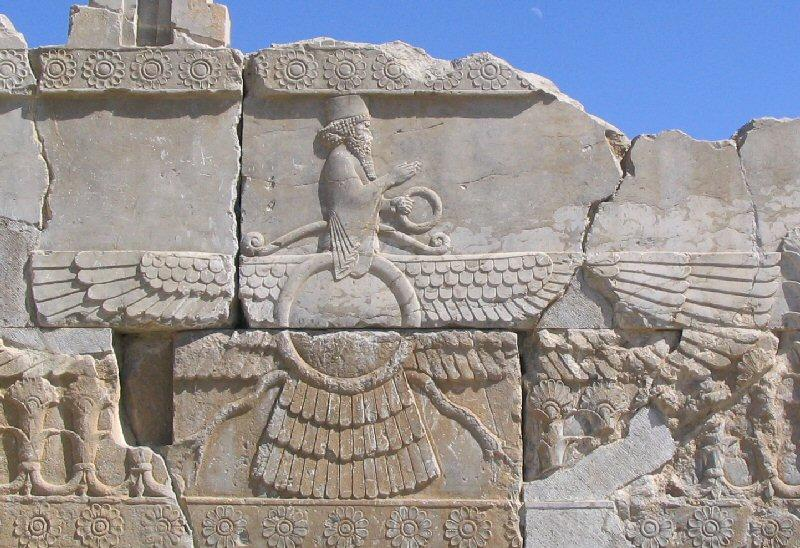
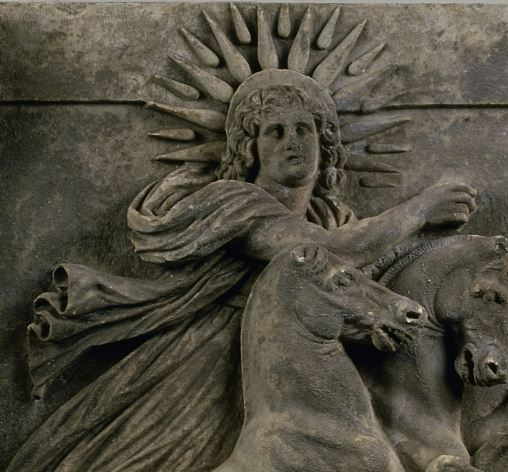
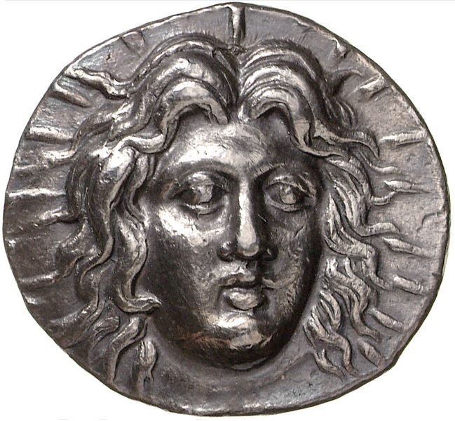
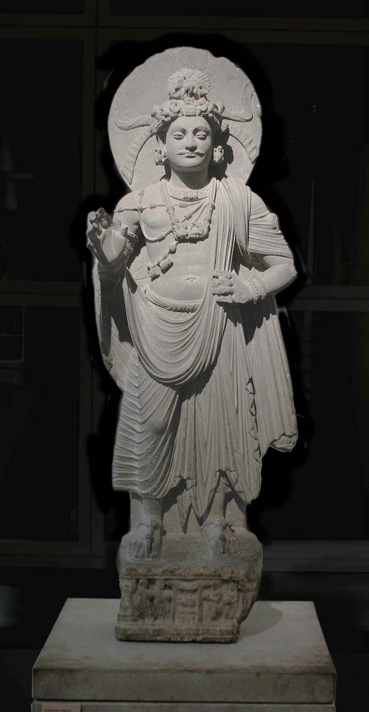
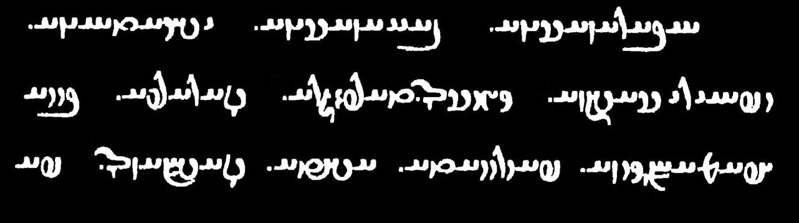
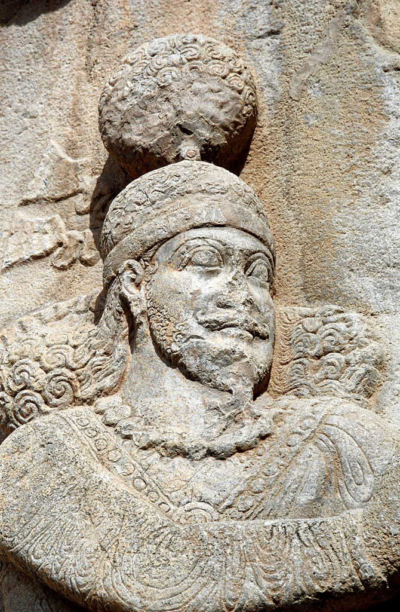
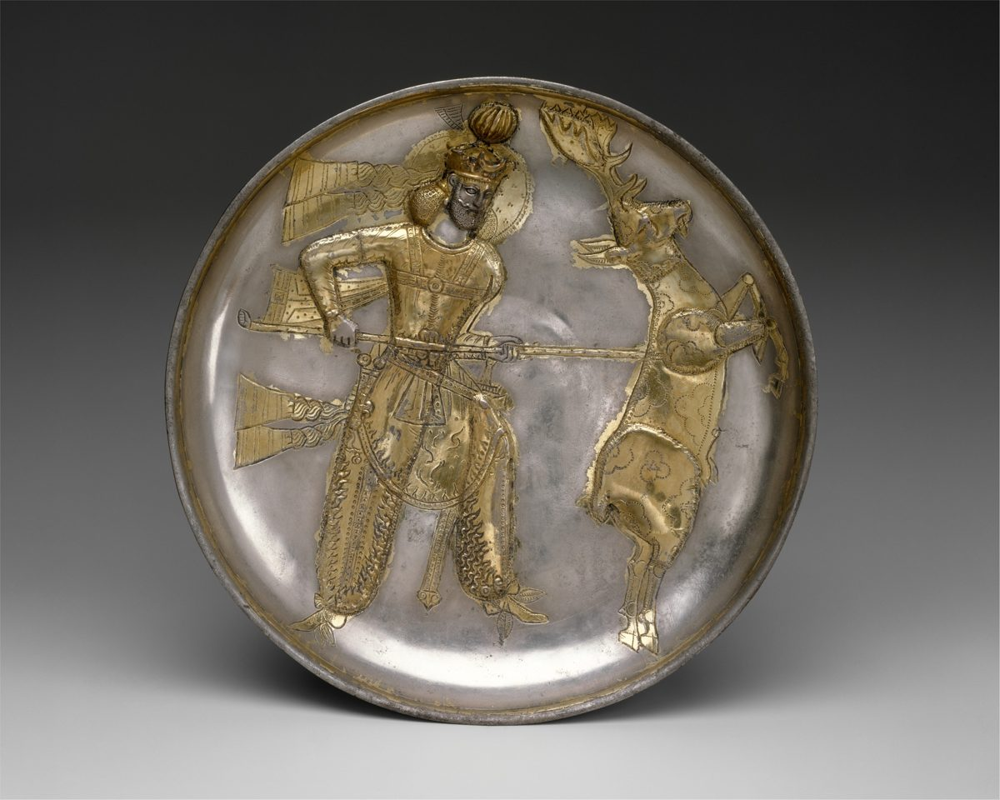

How the Nimbus
Was Built
The six elements that converged, under political and theological pressure, into the Sasanian punctiform disc
Sasanian Empire · 3rd–7th century CE · From the winged disc of Persepolis to the plate of Yazdgard I
The Sasanian nimbus was not invented. It was assembled — from six distinct elements, none sufficient alone, each contributing something the others could not provide. The panels below trace each element: what it was in its original context, why it was insufficient, and what it contributed to the composite sign. The sixth panel is the synthesis.

The winged disc — the fravahar — hovers above the king in Achaemenid royal scenes, conferring divine favour from celestial superiority. A human bust emerges from a disc flanked by great wings. Its Egyptian origin (the solar disc of Horus) was transmitted through Assyria to the Achaemenids. The figure likely represents both Ahura Mazdā and a solar deity — a deliberate doubling giving the symbol unusual theological flexibility.
The disc floats above the king, not on him. Divine favour descends from outside — the god above dispenses grace to the king below. The Sasanian programme needed a sign carried by the king himself, present in his very person. The disc needed to move from the sky to the head. The Achaemenid vocabulary was also five centuries old by the 3rd century CE — useful as a dynastic claim, but insufficient as a living visual language.
Two fundamental properties: the circular form as the right visual container for divine favour — enclosing, framing, marking a zone of special presence. And the logic of extrinsic, revocable grace — a quality held by virtue of a relationship with the divine order, not inherent to the person, and therefore capable of being lost.
The fravahar hovers above the king. Egyptian in origin, transmitted through Assyria. The figure represents both Ahura Mazdā and a solar deity — a deliberate doubling.
The disc floats above the king, not on him. The Sasanian programme needed a sign on the king's person. The disc needed to move from sky to head.
The circular form as the right container, and the logic of extrinsic, revocable grace — a quality held by relationship with the divine, capable of being lost.
The circular form and the logic of extrinsic, revocable divine grace.


In monumental sculpture and in numismatic circulation, the Greek solar halo says the same thing: luminosity originates within the figure. Helios does not receive light — he is light. The Rhodian tetradrachm is crucial: this was the visual form most widely circulated and most frequently encountered by Sasanian workshops — not the monument, but the coin that crossed every border.
The solar halo is a sign of intrinsic divinity. A figure wearing it claims to be divine. Within the Zoroastrian framework, the distinction between the divine and the human was fundamental. The most important intermediary was Mithra — increasingly assimilated to Helios in the Parthian period — who does carry the radiate crown. But Mithra is a god. The Sasanian king is not.
The cephalic focus — the head as the specific seat of transcendent quality, the point the sign encircles. The Achaemenid disc floated away from the body; the Gandhāran prâbha encompasses both a cephalic disc and a full-body mandorla. The Greek solar tradition insists on the head, precisely. It also confirmed the numismatic model: the available model was the coin, not the monument.
In sculpture and coinage, the Greek solar halo says: luminosity originates within the figure. The Rhodian coin was the most widely circulated model.
The solar halo is a sign of intrinsic divinity. Even via Mithra — who carries the radiate crown — the model was reserved for gods. The king is not a god.
The cephalic focus — the head, precisely, as the seat of transcendent marking — and the numismatic model of widely circulated imagery.
The cephalic focus — the head as the specific seat of the sign.

The Gandhāran prâbha developed from the same Hellenistic sources as the solar halo, but arrived at a radically different form. The disc behind the Bodhisattva's head is flat and smooth — it does not radiate, it simply frames. A perfect circle, separate from the figure, marking the space behind and around the head. Developed in the 1st–2nd centuries CE, before the Sasanian dynasty existed.
The prâbha marks permanent, achieved transcendence. The Bodhisattva who wears this disc wears it forever. It cannot be lost. The Sasanian xvarrah was precisely the opposite: real and luminous and powerful, but revocable. Yima's xvarrah abandoned him when he failed. A sign of permanence cannot express precariousness.
The decisive formal breakthrough: a disc behind and around the head, distinct from the figure, encircling without radiating — the right shape for something held from outside rather than generated from within. The Sasanian-Gandhāran relationship was one of parallel development from shared Hellenistic sources, not direct linear influence.
The Gandhāran prâbha is flat and smooth — it frames without radiating. From the same Hellenistic sources, arriving independently at the closest formal antecedent.
The prâbha marks permanent transcendence. The Sasanian xvarrah was revocable. A sign of permanence cannot express precariousness.
The decisive breakthrough: a disc behind and around the head, encircling without radiating — the right shape for something held from outside, not generated from within.
The decisive formal breakthrough: the encircling flat disc behind the head.

The xvarrah is a luminous quality that qualifies certain individuals for specific functions. Jean Kellens describes the Avestan concept as "force-d'abondance" — a magical power of abundance enabling the fulfilment of a cosmic mission. In Yasht 19.35, when Yima fails in his obligations, the xvarrah abandons him — departing in the form of a bird. It is not destroyed. It simply leaves. The precariousness of the quality is built into its theological definition.
Note: the distinction between the Avestan xvarenah and the Pahlavi xvarrah remains actively debated. Kellens, Gnoli, and Grenet do not fully converge. What follows is a provisional reading.
The Mazdean religious tradition was, from the Achaemenid period, fundamentally resistant to figuration. The divine entities of the Zoroastrian pantheon had been abstracted into notions rather than persons — patronising functions without being embodied in depictable figures. The xvarrah was a luminous abstraction: present and real and powerful, but belonging to a system that had systematically avoided giving its concepts visible form.
The xvarrah contributed not a visual form but the exact theological requirement the form had to satisfy: luminous, on the king's person, encircling the head, signifying both presence and potential absence, specific to the royal function.
No existing visual form satisfied all of these simultaneously. The xvarrah was the void that forced the synthesis. Without this specific necessity, the Sasanian workshops could have adopted any existing model. Because of it, they had to assemble a new one.
The relationship between the Avestan xvarenah and the Sasanian xvarrah is not a simple evolution. Kellens argues that treating xvarenah as "royal glory" is anachronistic at the Avestan stage; Gnoli and Grenet emphasise continuities he questions. The interpretation here follows the reading most consistent with the visual evidence.
Not a form but a necessity — the precise set of requirements that forced the composite sign into existence.

Detail: the korymbos — the large striated globe surmounting the royal crown — is clearly visible above the king's head. It is an attribute of dynastic identity, present on every Sasanian royal representation. Distinct from the nimbus: the korymbos sits above the crown, not behind or around the head. Collinet-Guérin described it as a pré-nimbe — a pre-nimbus — insofar as it already marks the royal head as a zone of special distinction.
The korymbos — the globe of hair or silk surmounting the Sasanian royal crown — is the standard attribute of dynastic headwear, present on every Sasanian royal representation from Ardashir I onward. It is distinct from the nimbus: it sits above the crown, not behind or around the head. Marthe Collinet-Guérin described it as a pré-nimbe — a pre-nimbus — insofar as it already marks the royal head as a zone of special distinction.
The korymbos, the fluttering dynastic ribbons, and the elaborate royal crown already constituted a dense visual vocabulary of royal identity before the disc-nimbus was added. The disc finds its place within this existing syntax — it does not replace or disrupt the royal headgear but takes its position behind the head as a specifically theological element added to an already legible display of court identity.
The Sasanian royal substrate contributed the interpretive framework within which the composite disc would be read. A viewer familiar with Sasanian royal iconography would read the disc as belonging to the same semantic field as the korymbos and the dynastic ribbons — as one element among others in the complex visual statement of royal legitimacy. The disc acquires its meaning in context, not in isolation.
The korymbos surmounts the crown on every Sasanian royal representation. It is above the crown — distinct from the disc behind the head. Collinet-Guérin called it a pré-nimbe: a pre-nimbus.
The korymbos, the dynastic ribbons, and the royal crown already constituted a dense visual vocabulary. The disc finds its place within this existing syntax — a theological element added to an already legible court display.
The interpretive framework within which the disc would be read. The disc acquires its meaning in context — as one element among others in the complex visual statement of royal legitimacy.
The interpretive context — the existing royal visual vocabulary within which the composite disc takes its place and acquires its meaning.

Gilded silver, 23.3 cm diameter. The king stands, killing a rearing stag with a crescent-tipped lance — the stag's protruding tongue marks it as dying. His identity is established by his crown. Behind and around his head: a circular disc, finely incised in the gilded surface, marked with small punctiform motifs grouped in threes. Above the crown: the korymbos. The two are distinct: the korymbos surmounts the crown; the disc encircles the head behind it.
Detail: the korymbos (the gilded striated globe above the crown) and the punctiform disc (the incised circle behind the head, marked with small grouped dots) are clearly distinct. The disc vibrates under the light of the silver surface — it is a texture, not a solid form. This is the visual translation of the xvarrah: a grace that is real but not permanent, luminous but not intrinsic.
From the Achaemenid source: the circular form and the logic of extrinsic, revocable grace.
From the Hellenistic source: the cephalic focus — the head as the specific seat of the sign.
From the Gandhāran source: the encircling flat disc behind the head, framing without radiating.
From the Zoroastrian necessity: the requirement that the sign express luminosity, precariousness, and royal function simultaneously.
From the Sasanian royal substrate: the korymbos and dynastic context within which the disc takes its theological place.
From the silversmith's hand: the punctiform texture — the formal decision that makes the disc vibrate rather than assert, suggest rather than declare.
The disc says simultaneously: this king is legitimate — he holds the xvarrah — and this grace can be lost — it is not inherent to his person. This double message could not have been produced by any of the six elements alone.
The Achaemenid disc was too distant from the body. The Hellenistic halo was too intrinsic. The Gandhāran disc was too permanent. The xvarrah had no image. The korymbos was already there but said something else. Only the composite sign, assembled under specific theological pressure, carries both meanings at once.
The Sasanian disc-nimbus is the only visual sign in the history of pre-Islamic art that simultaneously expresses legitimate authority and the precariousness of that authority. Neither the Christian halo, nor the Buddhist prâbha, nor the Hellenistic solar crown can say both things at once.